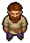
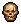
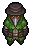
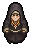
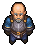
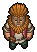
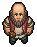
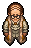
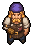

Characters
Characters is a game system in Graveyard Keeper 2. Characters offer quests, and some also trade items.
All character share a  reputation meter that increases when a quest is completed.
reputation meter that increases when a quest is completed.
List of characters
Base
 Keeper |
 Larry |
 Plague Doctor |
Crossroads
 Nun |
 Herbert |
Village
 Januarius |
 Jully |
 Herm |
 Jack |